DAMPING FORCE CONTROL ACTUATOR (for Front Side) > REMOVAL |
| 1. REMOVE SIDE STEP ASSEMBLY LH |
Remove the 6 bolts and side step.

| 2. REMOVE HEIGHT CONTROL PROTECTOR PIPE |
Remove the 6 bolts and protector pipe.
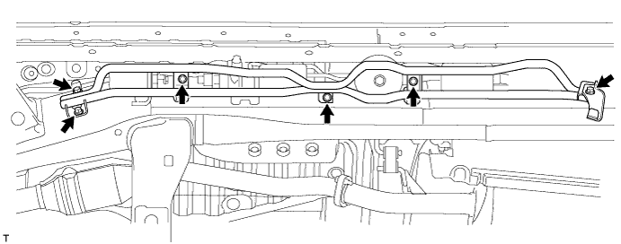
| 3. REMOVE HEIGHT CONTROL CYLINDER BRACKET ASSEMBLY |
Remove the 6 bolts and 3 brackets from the frame.
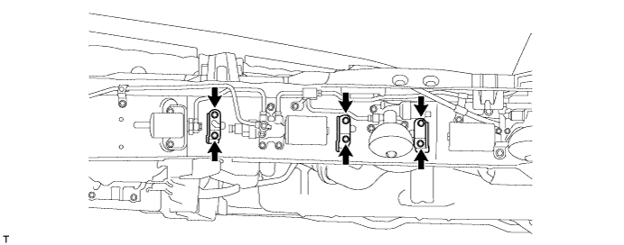
| 4. DISCHARGE SUSPENSION FLUID PRESSURE |
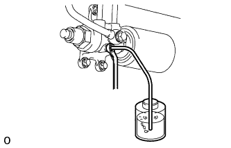 |
Connect a hose to the bleeder plug for the shock absorber control valve and loosen the bleeder plug.
Discharge the suspension fluid pressure.
After the fluid pressure has dropped and oil has drained out, tighten the bleeder plug and remove the hose.
| 5. REMOVE NO. 1 HEIGHT CONTROL TUBE LH |
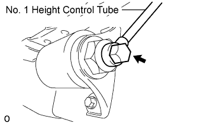 |
Remove the union bolt and gasket from the front No. 1 accumulator.
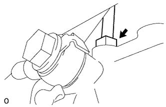 |
Using a union nut wrench, remove the No. 1 control tube from the shock absorber control valve.
| 6. REMOVE FRONT NO. 1 SUSPENSION CONTROL ACCUMULATOR ASSEMBLY LH |
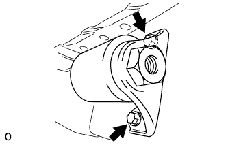 |
Remove the 2 bolts and No. 1 suspension control accumulator from the vehicle.
| 7. REMOVE FRONT NO. 2 SUSPENSION CONTROL ACCUMULATOR LH |
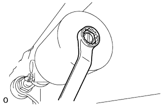 |
Remove the No. 2 control accumulator and O-ring from the front shock absorber control valve.
| 8. REMOVE NO. 2 HEIGHT CONTROL TUBE LH |
Using a union nut wrench, disconnect the No. 2 control tube from the No. 3 height control tube, shock absorber control valve and control valve.
Remove the bolt and No. 2 control tube.
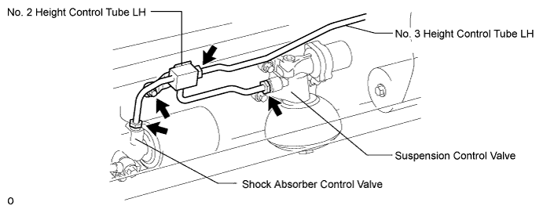
| 9. DISCONNECT NO. 2 SUSPENSION CONTROL PRESSURE HOSE |
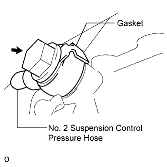 |
Remove the union bolt and gasket, then disconnect the No. 2 pressure hose from the shock absorber control valve.
| 10. REMOVE FRONT SHOCK ABSORBER CONTROL VALVE ASSEMBLY LH |
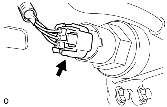 |
Disconnect the connector.
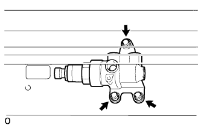 |
Remove the 3 bolts and control valve.
Remove the cap and bleeder plug.
| 11. REMOVE FRONT NO. 3 SUSPENSION CONTROL ACCUMULATOR LH |
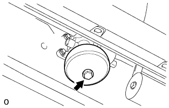 |
Remove the control accumulator from the control valve.
Remove the O-ring and back-up ring from the accumulator.
| 12. REMOVE FRONT SUSPENSION CONTROL VALVE ASSEMBLY LH |
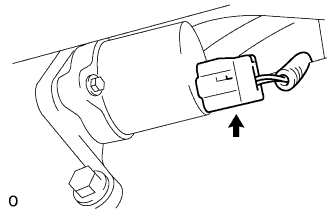 |
Disconnect the connector from the control valve.
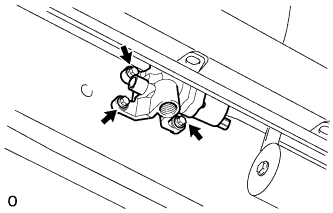 |
Remove the 3 bolts and control valve.